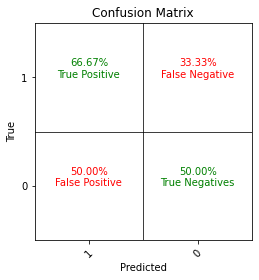
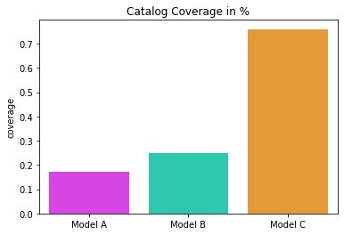
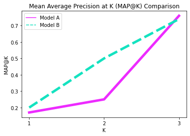
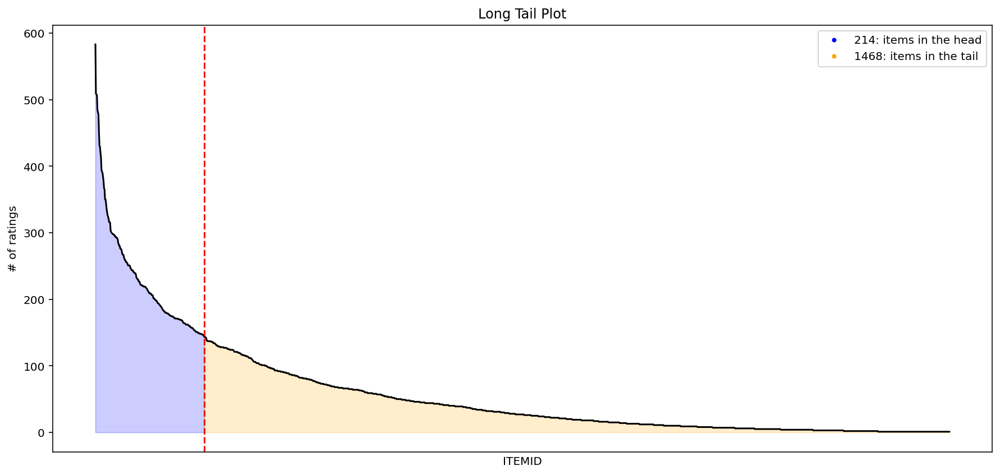
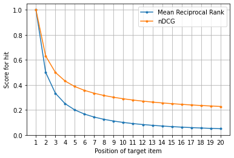

Recommender System Evaluations¶
Part 1¶
import numpy as np
def mean_reciprocal_rank(rs):
rs = (np.asarray(r).nonzero()[0] for r in rs)
return np.mean([1. / (r[0] + 1) if r.size else 0. for r in rs])
mean_reciprocal_rank([[0,0,1],[0,1,1],[1,1,0]])
0.611111111111111
import numpy as np
def r_precision(r):
r = np.asarray(r) != 0
z = r.nonzero()[0]
if not z.size:
return 0.
return np.mean(r[:z[-1] + 1])
r_precision([0,0,1,1])
0.5
import numpy as np
def precision_at_k(r, k):
assert k >= 1
r = np.asarray(r)[:k] != 0
if r.size != k:
raise ValueError('Relevance score length < k')
return np.mean(r)
precision_at_k([0,0,1,1], 3)
0.3333333333333333
# import numpy as np
def average_precision(r):
r = np.asarray(r) != 0
out = [precision_at_k(r, k + 1) for k in range(r.size) if r[k]]
if not out:
return 0.
return np.mean(out)
average_precision([0,0,1,1])
0.41666666666666663
import numpy as np
def mean_average_precision(rs):
return np.mean([average_precision(r) for r in rs])
mean_average_precision([[0,0,1,1],[0,1]])
0.4583333333333333
import numpy as np
def dcg_at_k(r, k, method=0):
r = np.asfarray(r)[:k]
if r.size:
if method == 0:
return r[0] + np.sum(r[1:] / np.log2(np.arange(2, r.size + 1)))
elif method == 1:
return np.sum(r / np.log2(np.arange(2, r.size + 2)))
elif method == 2:
return np.sum(np.subtract(np.power(2, r), 1) / np.log2(np.arange(2, r.size + 2)))
else:
raise ValueError('method must be 0 or 1.')
return 0.
dcg_at_k([3, 2, 3, 0, 1, 2], 6)
8.097171433256849
import numpy as np
def ndcg_at_k(r, k, method=0):
dcg_max = dcg_at_k(sorted(r, reverse=True), k, method)
if not dcg_max:
return 0.
return dcg_at_k(r, k, method) / dcg_max
ndcg_at_k([3, 2, 3, 0, 1, 2], 6, method=1)
0.9488107485678985
import numpy as np
from typing import List
def novelty(predicted: List[list], pop: dict, u: int, n: int) -> (float, list):
"""
Computes the novelty for a list of recommendations
Parameters
----------
predicted : a list of lists
Ordered predictions
example: [['X', 'Y', 'Z'], ['X', 'Y', 'Z']]
pop: dictionary
A dictionary of all items alongside of its occurrences counter in the training data
example: {1198: 893, 1270: 876, 593: 876, 2762: 867}
u: integer
The number of users in the training data
n: integer
The length of recommended lists per user
Returns
----------
novelty:
The novelty of the recommendations in system level
mean_self_information:
The novelty of the recommendations in recommended top-N list level
----------
Metric Defintion:
Zhou, T., Kuscsik, Z., Liu, J. G., Medo, M., Wakeling, J. R., & Zhang, Y. C. (2010).
Solving the apparent diversity-accuracy dilemma of recommender systems.
Proceedings of the National Academy of Sciences, 107(10), 4511-4515.
"""
mean_self_information = []
k = 0
for sublist in predicted:
self_information = 0
k += 1
for i in sublist:
self_information += np.sum(-np.log2(pop[i]/u))
mean_self_information.append(self_information/n)
novelty = sum(mean_self_information)/k
return novelty, mean_self_information
novelty([['A','B','C'],['B','A']],
{'A':10, 'B':10, 'C':10, 'D':10, 'E':10},
2, 3)
(-1.9349400790728017, [-2.321928094887362, -1.5479520632582415])
from typing import List
def prediction_coverage(predicted: List[list], catalog: list) -> float:
"""
Computes the prediction coverage for a list of recommendations
Parameters
----------
predicted : a list of lists
Ordered predictions
example: [['X', 'Y', 'Z'], ['X', 'Y', 'Z']]
catalog: list
A list of all unique items in the training data
example: ['A', 'B', 'C', 'X', 'Y', Z]
Returns
----------
prediction_coverage:
The prediction coverage of the recommendations as a percent
rounded to 2 decimal places
----------
Metric Defintion:
Ge, M., Delgado-Battenfeld, C., & Jannach, D. (2010, September).
Beyond accuracy: evaluating recommender systems by coverage and serendipity.
In Proceedings of the fourth ACM conference on Recommender systems (pp. 257-260). ACM.
"""
predicted_flattened = [p for sublist in predicted for p in sublist]
unique_predictions = len(set(predicted_flattened))
prediction_coverage = round(unique_predictions/(len(catalog)* 1.0)*100,2)
return prediction_coverage
prediction_coverage([['A','B','D'],['B','A','C']], ['A','B','C','D','E'])
80.0
import random
from typing import List
def catalog_coverage(predicted: List[list], catalog: list, k: int) -> float:
"""
Computes the catalog coverage for k lists of recommendations
Parameters
----------
predicted : a list of lists
Ordered predictions
example: [['X', 'Y', 'Z'], ['X', 'Y', 'Z']]
catalog: list
A list of all unique items in the training data
example: ['A', 'B', 'C', 'X', 'Y', Z]
k: integer
The number of observed recommendation lists
which randomly choosed in our offline setup
Returns
----------
catalog_coverage:
The catalog coverage of the recommendations as a percent
rounded to 2 decimal places
----------
Metric Defintion:
Ge, M., Delgado-Battenfeld, C., & Jannach, D. (2010, September).
Beyond accuracy: evaluating recommender systems by coverage and serendipity.
In Proceedings of the fourth ACM conference on Recommender systems (pp. 257-260). ACM.
"""
sampling = random.choices(predicted, k=k)
predicted_flattened = [p for sublist in sampling for p in sublist]
L_predictions = len(set(predicted_flattened))
catalog_coverage = round(L_predictions/(len(catalog)*1.0)*100,2)
return catalog_coverage
catalog_coverage([['A','B','D'],['B','A','C'],['B','A','D']], ['A','B','C','D','E'], 2)
80.0
def recall_at_k(actual: list, predicted: list, k) -> int:
if len(predicted)>k:
predicted = predicted[:k]
score = 0.0
num_hits = 0.0
if actual:
for i,p in enumerate(predicted):
if p in actual and p not in predicted[:i]:
num_hits += 1.0
score += num_hits / (i+1.0)
return score / len(actual)
else:
return 0.0
recall_at_k([1,2,3,4,5],[2,4,6,8,10],4), \
recall_at_k([2,3,7,8,9],[1,3,5,8,10],4)
(0.4, 0.2)
def mean_average_recall(actual: List[list], predicted: List[list], k=10) -> int:
return np.mean([recall_at_k(a,p,k) for a,p in zip(actual, predicted)])
mean_average_recall([[1,2,3,4,5],[2,4,6,8,10]],
[[2,3,7,8,9],[1,3,5,8,10]],
4)
0.225
from math import sqrt
from sklearn.metrics import mean_squared_error
def mse(y: list, yhat: np.array) -> float:
mse = mean_squared_error(y, yhat)
return mse
def rmse(y: list, yhat: np.array) -> float:
rmse = sqrt(mean_squared_error(y, yhat))
return rmse
rmse([1,4,3],[1,2,3])
1.1547005383792515
from itertools import product
import matplotlib.pyplot as plt
import numpy as np
import scipy.sparse as sp
from sklearn.metrics import confusion_matrix
def make_confusion_matrix(y: list, yhat: list) -> None:
cm = confusion_matrix(y, yhat, labels=[1,0])
cm = np.round(cm.astype('float') / cm.sum(axis=1)[:, np.newaxis],4)*100
fmt = ".2f"
_ = cm.max() / 2. # TODO: Unused argument
descriptions = np.array([["True Positive", "False Negative"], ["False Positive", "True Negatives"]])
colors = np.array([["green", "red"], ["red", "green"]])
plt.imshow([[0,0],[0,0]], interpolation='nearest', cmap=plt.cm.Greys)
for i, j in product(range(cm.shape[0]), range(cm.shape[1])):
plt.text(j, i, format(cm[i, j], fmt)+'%\n' + descriptions[i, j],
horizontalalignment="center",
color=colors[i,j])
plt.axhline(y=0.5, xmin=0, xmax=1, color="black", linewidth=0.75)
plt.axvline(x=0.5, ymin=0, ymax=1, color="black", linewidth=0.75)
plt.ylabel('True')
plt.xlabel('Predicted')
plt.title("Confusion Matrix")
plt.xticks([0,1], [1,0], rotation=45)
plt.yticks([0,1], [1,0])
plt.show()
make_confusion_matrix([1,0,0,1,1],[1,1,0,0,1])

import random
from itertools import product
from math import sqrt
from typing import List
import numpy as np
import pandas as pd
import scipy.sparse as sp
from sklearn.metrics import mean_squared_error
from sklearn.metrics.pairwise import cosine_similarity
def personalization(predicted: List[list]) -> float:
"""
Personalization measures recommendation similarity across users.
A high score indicates good personalization (user's lists of recommendations are different).
A low score indicates poor personalization (user's lists of recommendations are very similar).
A model is "personalizing" well if the set of recommendations for each user is different.
Parameters:
----------
predicted : a list of lists
Ordered predictions
example: [['X', 'Y', 'Z'], ['X', 'Y', 'Z']]
Returns:
-------
The personalization score for all recommendations.
"""
def make_rec_matrix(predicted: List[list]) -> sp.csr_matrix:
df = pd.DataFrame(data=predicted).reset_index().melt(
id_vars='index', value_name='item',
)
df = df[['index', 'item']].pivot(index='index', columns='item', values='item')
df = pd.notna(df)*1
rec_matrix = sp.csr_matrix(df.values)
return rec_matrix
#create matrix for recommendations
predicted = np.array(predicted)
rec_matrix_sparse = make_rec_matrix(predicted)
#calculate similarity for every user's recommendation list
similarity = cosine_similarity(X=rec_matrix_sparse, dense_output=False)
#get indicies for upper right triangle w/o diagonal
upper_right = np.triu_indices(similarity.shape[0], k=1)
#calculate average similarity
personalization = np.mean(similarity[upper_right])
return 1-personalization
def _single_list_similarity(predicted: list, feature_df: pd.DataFrame, u: int) -> float:
"""
Computes the intra-list similarity for a single list of recommendations.
Parameters
----------
predicted : a list
Ordered predictions
Example: ['X', 'Y', 'Z']
feature_df: dataframe
A dataframe with one hot encoded or latent features.
The dataframe should be indexed by the id used in the recommendations.
Returns:
-------
ils_single_user: float
The intra-list similarity for a single list of recommendations.
"""
# exception predicted list empty
if not(predicted):
raise Exception('Predicted list is empty, index: {0}'.format(u))
#get features for all recommended items
recs_content = feature_df.loc[predicted]
recs_content = recs_content.dropna()
recs_content = sp.csr_matrix(recs_content.values)
#calculate similarity scores for all items in list
similarity = cosine_similarity(X=recs_content, dense_output=False)
#get indicies for upper right triangle w/o diagonal
upper_right = np.triu_indices(similarity.shape[0], k=1)
#calculate average similarity score of all recommended items in list
ils_single_user = np.mean(similarity[upper_right])
return ils_single_user
def intra_list_similarity(predicted: List[list], feature_df: pd.DataFrame) -> float:
"""
Computes the average intra-list similarity of all recommendations.
This metric can be used to measure diversity of the list of recommended items.
Parameters
----------
predicted : a list of lists
Ordered predictions
Example: [['X', 'Y', 'Z'], ['X', 'Y', 'Z']]
feature_df: dataframe
A dataframe with one hot encoded or latent features.
The dataframe should be indexed by the id used in the recommendations.
Returns:
-------
The average intra-list similarity for recommendations.
"""
feature_df = feature_df.fillna(0)
Users = range(len(predicted))
ils = [_single_list_similarity(predicted[u], feature_df, u) for u in Users]
return np.mean(ils)
!pip install -q funcsigs
import matplotlib.pyplot as plt
import numpy as np
import pandas as pd
import plotly.graph_objects as go
import seaborn as sns
from funcsigs import signature
from matplotlib.lines import Line2D
from sklearn.metrics import (auc, average_precision_score,
precision_recall_curve, roc_curve)
def long_tail_plot(df, item_id_column, interaction_type, percentage=None, x_labels=True):
"""
Plots the long tail for a user-item interaction dataset.
----------
df: pandas dataframe
user-item interaction dataframe
example:
item_id_column: str
column name identifying the item ids in the dataframe
interaction_type: str
type of user-item interactions
i.e. 'purchases', 'ratings' 'interactions', or 'clicks'
percentage: float, default=None
percent of volume to consider as the head (percent as a decimal)
(if default=None no line will be plotted)
x_tables bool, default=True
if True, plot x-axis tick labels
if False, no x-axis tick lavels will be plotted.
Returns:
-------
A long tail plot
"""
#calculate cumulative volumes
volume_df = df[item_id_column].value_counts().reset_index()
volume_df.columns = [item_id_column, "volume"]
volume_df[item_id_column] = volume_df[item_id_column].astype(str)
volume_df['cumulative_volume'] = volume_df['volume'].cumsum()
volume_df['percent_of_total_volume'] = volume_df['cumulative_volume']/volume_df['volume'].sum()
#line plot of cumulative volume
x=range(0,len(volume_df))
ax = sns.lineplot(x, y="volume", data=volume_df, color="black")
plt.xticks(x)
#set labels
ax.set_title('Long Tail Plot')
ax.set_ylabel('# of ' + interaction_type)
ax.set_xlabel(item_id_column)
if percentage != None:
#plot vertical line at the tail location
head = volume_df[volume_df["percent_of_total_volume"] <= percentage]
tail = volume_df[volume_df["percent_of_total_volume"] > percentage]
items_in_head = len(head)
items_in_tail = len(tail)
plt.axvline(x=items_in_head, color="red", linestyle='--')
# fill area under plot
head = head.append(tail.head(1))
x1 = head.index.values
y1 = head['volume']
x2 = tail.index.values
y2 = tail['volume']
ax.fill_between(x1, y1, color="blue", alpha=0.2)
ax.fill_between(x2, y2, color="orange", alpha=0.2)
#create legend
legend_elements = [Line2D([0], [0], marker='o', color='w', label=str(items_in_head)+': items in the head', markerfacecolor='blue', markersize=5),
Line2D([0], [0], marker='o', color='w', label=str(items_in_tail)+': items in the tail', markerfacecolor='orange', markersize=5)]
ax.legend(handles=legend_elements, loc=1)
else:
x1 = volume_df[item_id_column]
y1 = volume_df['volume']
ax.fill_between(x1, y1, color="blue", alpha=0.3)
if x_labels == False:
plt.xticks([], [])
ax.set(xticklabels=[])
else:
ax.set_xticklabels(labels = volume_df[item_id_column], rotation = 45, ha="right")
plt.show()
def coverage_plot(coverage_scores: list, model_names: list) -> None:
"""
Plots the coverage for a set of models to compare.
----------
coverage_scores: list
list of coverage scores in same order as model_names
example: [0.17, 0.25, 0.76]
model_names: list
list of model names in same order as coverage_scores
example: ['Model A', 'Model B', 'Model C']
Returns:
-------
A coverage plot
"""
#create palette
recommender_palette = ["#ED2BFF", "#14E2C0", "#FF9F1C", "#5E2BFF","#FC5FA3"]
sns.set_palette(recommender_palette)
#make barplot
ax = sns.barplot(x=model_names, y=coverage_scores)
#set labels
ax.set_title('Catalog Coverage in %')
ax.set_ylabel('coverage')
plt.show()
coverage_plot([0.17, 0.25, 0.76], ['Model A', 'Model B', 'Model C'])

def mark_plot(mark_scores, model_names, k_range):
"""
Plots the mean average recall at k for a set of models to compare.
----------
mark_scores: list of lists
list of list of mar@k scores over k. This list is in same order as model_names
example: [[0.17, 0.25, 0.76],[0.2, 0.5, 0.74]]
model_names: list
list of model names in same order as coverage_scores
example: ['Model A', 'Model B']
k_range: list
list or array identifying all k values in order
example: [1,2,3,4,5,6,7,8,9,10]
Returns:
-------
A mar@k plot
"""
#create palette
recommender_palette = ["#ED2BFF", "#14E2C0", "#FF9F1C", "#5E2BFF","#FC5FA3"]
sns.set_palette(recommender_palette)
#lineplot
mark_df = pd.DataFrame(np.column_stack(mark_scores), k_range, columns=model_names)
ax = sns.lineplot(data=mark_df)
plt.xticks(k_range)
plt.setp(ax.lines,linewidth=5)
#set labels
ax.set_title('Mean Average Recall at K (MAR@K) Comparison')
ax.set_ylabel('MAR@K')
ax.set_xlabel('K')
plt.show()
mark_plot([[0.17, 0.25, 0.76],[0.2, 0.5, 0.74]],
['Model A', 'Model B'],
[1,2,3])
def mapk_plot(mapk_scores, model_names, k_range):
"""
Plots the mean average precision at k for a set of models to compare.
----------
mapk_scores: list of lists
list of list of map@k scores over k. This lis is in same order as model_names
example: [[0.17, 0.25, 0.76],[0.2, 0.5, 0.74]]
model_names: list
list of model names in same order as coverage_scores
example: ['Model A', 'Model B']
k_range: list
list or array indeitifying all k values in order
example: [1,2,3,4,5,6,7,8,9,10]
Returns:
-------
A map@k plot
"""
#create palette
recommender_palette = ["#ED2BFF", "#14E2C0", "#FF9F1C", "#5E2BFF","#FC5FA3"]
sns.set_palette(recommender_palette)
#lineplot
mapk_df = pd.DataFrame(np.column_stack(mapk_scores), k_range, columns=model_names)
ax = sns.lineplot(data=mapk_df)
plt.xticks(k_range)
plt.setp(ax.lines,linewidth=5)
#set labels
ax.set_title('Mean Average Precision at K (MAP@K) Comparison')
ax.set_ylabel('MAP@K')
ax.set_xlabel('K')
plt.show()
mapk_plot([[0.17, 0.25, 0.76],[0.2, 0.5, 0.74]],
['Model A', 'Model B'],
[1,2,3])

def roc_plot(actual, model_probs, model_names, figsize=(10,10)):
"""
Receiver Operating Characteristic Plot. Can plot multiple models.
----------
actual: array of dataframe of true classes assignements.
example:
[1,1,0,1,0]
model_probs: list of arrays
a list containing classification probabilites for each model in order.
example:
model_probs = [class_probs_1, class_probs_2]
model_names: list of strings
a list containing names for each model in order.
example:
model_names = ["GBT", "Logistic Regression"]
figsize: size of figure
Returns:
-------
Receiver Operating Characteristic Plot with AUC in the legend.
"""
model_names = make_listy(model_names)
if not is_listy(model_probs): model_probs = [model_probs]
if len(model_names) > 5:
return ValueError("Can only compare 5 models or less.")
colors = ["#ED2BFF", "#14E2C0", "#FF9F1C", "#5E2BFF","#FC5FA3"]
for m in range(len(model_names)):
fpr, tpr, _ = roc_curve(actual, model_probs[m])
roc_auc = auc(fpr, tpr)
ax = sns.lineplot(x=fpr,
y=tpr,
lw=2,
color=colors[m],
label = model_names[m] + ' AUC = %0.4f' % roc_auc)
ax.plot([0, 1], [0, 1], 'r--')
ax.set_title('Receiver Operating Characteristic Plot')
ax.set_ylabel('True Positive Rate')
ax.set_xlabel('False Positive Rate')
plt.show()
def precision_recall_plot(targs, preds, figsize=(6,6)):
"""
Plots the precision recall curve
----------
targs: array-like true class labels
preds: array-like predicted probabilities
figsize: size of figure
Returns:
-------
A precision and recall curve
"""
average_precision = average_precision_score(targs, preds)
precision, recall, _ = precision_recall_curve(targs, preds)
plt.figure(figsize=figsize)
step_kwargs = ({'step': 'post'}
if 'step' in signature(plt.fill_between).parameters
else {})
plt.step(recall, precision, color='b', alpha=0.2,
where='post')
plt.fill_between(recall, precision, alpha=0.2, color='b', **step_kwargs)
plt.xlabel('Recall')
plt.ylabel('Precision')
plt.ylim([0.0, 1.05])
plt.xlim([0.0, 1.0])
plt.title('2-class Precision-Recall curve: AP={0:0.2f}'.format(
average_precision))
plt.show()
def make_listy(p):
if isinstance(p, str): return [p]
try:
_ = iter(p)
except TypeError:
p = [p]
return p
def is_listy(x): return isinstance(x, (tuple,list))
def metrics_plot(model_names, metric_names, scores):
fig = go.Figure()
for model_name, *vals in zip(model_names, *scores):
fig.add_trace(go.Scatterpolar(
r=vals,
theta=metric_names,
fill='tonext',
name=model_name
))
fig.update_layout(
polar=dict(
radialaxis=dict(
visible=True,
range=[0, 100]
)),
showlegend=True
)
fig.show()
metrics_plot(['Model A', 'Model B', 'Model C'],
['Coverage','Personalization','Diversity'],
[[17, 25, 76],
[43, 23, 44],
[23, 21, 69]])
!pip install -q git+https://github.com/sparsh-ai/recochef.git
Installing build dependencies ... ?25l?25hdone
Getting requirements to build wheel ... ?25l?25hdone
Preparing wheel metadata ... ?25l?25hdone
|████████████████████████████████| 4.3MB 9.3MB/s
?25h Building wheel for recochef (PEP 517) ... ?25l?25hdone
from recochef.datasets.movielens import MovieLens
data = MovieLens()
ratings = data.load_interactions()
ratings.head()
| USERID | ITEMID | RATING | TIMESTAMP | |
|---|---|---|---|---|
| 0 | 196 | 242 | 3.0 | 881250949 |
| 1 | 186 | 302 | 3.0 | 891717742 |
| 2 | 22 | 377 | 1.0 | 878887116 |
| 3 | 244 | 51 | 2.0 | 880606923 |
| 4 | 166 | 346 | 1.0 | 886397596 |
fig = plt.figure(figsize=(15, 7))
long_tail_plot(ratings, 'ITEMID', 'ratings', percentage=0.5, x_labels=False)

import numpy as np
from tqdm import tqdm
def sequential_evaluation(recommender,
test_sequences,
evaluation_functions,
users=None,
given_k=1,
look_ahead=1,
top_n=10,
scroll=True,
step=1):
"""
Runs sequential evaluation of a recommender over a set of test sequences
:param recommender: the instance of the recommender to test
:param test_sequences: the set of test sequences
:param evaluation_functions: list of evaluation metric functions
:param users: (optional) the list of user ids associated to each test sequence. Required by personalized models like FPMC.
:param given_k: (optional) the initial size of each user profile, starting from the first interaction in the sequence.
If <0, start counting from the end of the sequence. It must be != 0.
:param look_ahead: (optional) number of subsequent interactions in the sequence to be considered as ground truth.
It can be any positive number or 'all' to extend the ground truth until the end of the sequence.
:param top_n: (optional) size of the recommendation list
:param scroll: (optional) whether to scroll the ground truth until the end of the sequence.
If True, expand the user profile and move the ground truth forward of `step` interactions. Recompute and evaluate recommendations every time.
If False, evaluate recommendations once per sequence without expanding the user profile.
:param step: (optional) number of interactions that will be added to the user profile at each step of the sequential evaluation.
:return: the list of the average values for each evaluation metric
"""
if given_k == 0:
raise ValueError('given_k must be != 0')
metrics = np.zeros(len(evaluation_functions))
with tqdm(total=len(test_sequences)) as pbar:
for i, test_seq in enumerate(test_sequences):
if users is not None:
user = users[i]
else:
user = None
if scroll:
metrics += sequence_sequential_evaluation(recommender,
test_seq,
evaluation_functions,
user,
given_k,
look_ahead,
top_n,
step)
else:
metrics += evaluate_sequence(recommender,
test_seq,
evaluation_functions,
user,
given_k,
look_ahead,
top_n)
pbar.update(1)
return metrics / len(test_sequences)
def evaluate_sequence(recommender, seq, evaluation_functions, user, given_k, look_ahead, top_n):
"""
:param recommender: which recommender to use
:param seq: the user_profile/ context
:param given_k: last element used as ground truth. NB if <0 it is interpreted as first elements to keep
:param evaluation_functions: which function to use to evaluate the rec performance
:param look_ahead: number of elements in ground truth to consider. if look_ahead = 'all' then all the ground_truth sequence is considered
:return: performance of recommender
"""
# safety checks
if given_k < 0:
given_k = len(seq) + given_k
user_profile = seq[:given_k]
ground_truth = seq[given_k:]
# restrict ground truth to look_ahead
ground_truth = ground_truth[:look_ahead] if look_ahead != 'all' else ground_truth
ground_truth = list(map(lambda x: [x], ground_truth)) # list of list format
if not user_profile or not ground_truth:
# if any of the two missing all evaluation functions are 0
return np.zeros(len(evaluation_functions))
r = recommender.recommend(user_profile, user)[:top_n]
if not r:
# no recommendation found
return np.zeros(len(evaluation_functions))
reco_list = recommender.get_recommendation_list(r)
tmp_results = []
for f in evaluation_functions:
tmp_results.append(f(ground_truth, reco_list))
return np.array(tmp_results)
def sequence_sequential_evaluation(recommender, seq, evaluation_functions, user, given_k, look_ahead, top_n, step):
if given_k < 0:
given_k = len(seq) + given_k
eval_res = 0.0
eval_cnt = 0
for gk in range(given_k, len(seq), step):
eval_res += evaluate_sequence(recommender, seq, evaluation_functions, user, gk, look_ahead, top_n)
eval_cnt += 1
return eval_res / eval_cnt
import random
from scipy.sparse import find
def random_holdout(dataset, perc=0.8, seed=1234):
"""
Split sequence dataset randomly
:param dataset: the sequence dataset
:param perc: the training percentange
:param seed: the random seed
:return: the training and test splits
"""
dataset = dataset.sample(frac=1, random_state=seed)
nseqs = len(dataset)
train_size = int(nseqs * perc)
# split data according to the shuffled index and the holdout size
train_split = dataset[:train_size]
test_split = dataset[train_size:]
return train_split, test_split
def temporal_holdout(dataset, ts_threshold):
"""
Split sequence dataset using timestamps
:param dataset: the sequence dataset
:param ts_threshold: the timestamp from which test sequences will start
:return: the training and test splits
"""
train = dataset.loc[dataset['ts'] < ts_threshold]
test = dataset.loc[dataset['ts'] >= ts_threshold]
train, test = clean_split(train, test)
return train, test
def last_session_out_split(data,
user_key='user_id',
session_key='session_id',
time_key='ts'):
"""
Assign the last session of every user to the test set and the remaining ones to the training set
"""
sessions = data.sort_values(by=[user_key, time_key]).groupby(user_key)[session_key]
last_session = sessions.last()
train = data[~data.session_id.isin(last_session.values)].copy()
test = data[data.session_id.isin(last_session.values)].copy()
train, test = clean_split(train, test)
return train, test
def clean_split(train, test):
"""
Remove new items from the test set.
:param train: The training set.
:param test: The test set.
:return: The cleaned training and test sets.
"""
train_items = set()
train['sequence'].apply(lambda seq: train_items.update(set(seq)))
test['sequence'] = test['sequence'].apply(lambda seq: [it for it in seq if it in train_items])
return train, test
def balance_dataset(x, y):
number_of_elements = y.shape[0]
nnz = set(find(y)[0])
zero = set(range(number_of_elements)).difference(nnz)
max_samples = min(len(zero), len(nnz))
nnz_indices = random.sample(nnz, max_samples)
zero_indeces = random.sample(zero, max_samples)
indeces = nnz_indices + zero_indeces
return x[indeces, :], y[indeces, :]
Part 2¶
Understanding evaluation metrics and pricing factors.
import numpy as np
import pandas as pd
import math
HR@K¶
def hit_rate_at_k(recommended_list, bought_list, k=5):
bought_list = np.array(bought_list)
recommended_list = np.array(recommended_list)[:k]
flags = np.isin(bought_list, recommended_list)
return (flags.sum() > 0) * 1
recommended_list = [156, 1134, 27, 1543, 3345, 143, 32, 533, 11, 43] #items ids
bought_list = [521, 32, 143, 991]
hit_rate_at_k(recommended_list, bought_list, 5)
0
hit_rate_at_k(recommended_list, bought_list, 10)
1
Precision@K¶
Precision = (# of recommended items that are relevant) / (# of recommended items)
Precision @ k = (# of recommended items @k that are relevant) / (# of recommended items @k)
Money Precision @ k = (revenue of recommended items @k that are relevant) / (revenue of recommended items @k)
def precision_at_k(recommended_list, bought_list, k=5):
bought_list = np.array(bought_list)
recommended_list = np.array(recommended_list)[:k]
flags = np.isin(bought_list, recommended_list)
return flags.sum() / len(recommended_list)
def money_precision_at_k(recommended_list, bought_list, prices_recommended, k=5):
recommend_list = np.array(recommended_list)[:k]
prices_recommended = np.array(prices_recommended)[:k]
flags = np.isin(recommend_list, bought_list)
precision = np.dot(flags, prices_recommended) / prices_recommended.sum()
return precision
recommended_list = [156, 1134, 27, 1543, 3345, 143, 32, 533, 11, 43] #items ids
bought_list = [521, 32, 143, 991]
prices_recommendede_list = [400, 60, 40, 90, 60, 340, 70, 190,110, 240]
precision_at_k(recommended_list, bought_list, 5)
0.0
precision_at_k(recommended_list, bought_list, 10)
0.2
money_precision_at_k(recommended_list, bought_list, prices_recommendede_list, 5)
0.0
money_precision_at_k(recommended_list, bought_list, prices_recommendede_list, 10)
0.25625
Recall@K¶
Recall = (# of recommended items that are relevant) / (# of relevant items)
Recall @ k = (# of recommended items @k that are relevant) / (# of relevant items)
Money Recall @ k = (revenue of recommended items @k that are relevant) / (revenue of relevant items)
recommended_list=[143,156,1134,991,27,1543,3345,533,11,43] #itemsid
prices_recommended_list=[400,60,40,90,60,340,70,190,110,240]
bought_list=[521,32,143,991]
prices_bought=[150,30,400,90]
def recall_at_k(recommended_list, bought_list, k=5):
bought_list = np.array(bought_list)
recommended_list = np.array(recommended_list)[:k]
flags = np.isin(bought_list, recommended_list)
return flags.sum() / len(bought_list)
def money_recall_at_k(recommended_list, bought_list, prices_recommended, prices_bought, k=5):
bought_list = np.array(bought_list)
prices_bought = np.array(prices_bought)
recommended_list = np.array(recommended_list)[:k]
prices_recommended = np.array(prices_recommended)[:k]
flags = np.isin(recommended_list, bought_list)
return np.dot(flags, prices_recommended)/prices_bought.sum()
recall_at_k(recommended_list, bought_list, 5)
0.5
recall_at_k(recommended_list, bought_list, 10)
0.5
money_recall_at_k(recommended_list, bought_list, prices_recommendede_list, 5)
98.0
money_recall_at_k(recommended_list, bought_list, prices_recommendede_list, 10)
49.0
MAP@K¶
MAP @ k (Mean Average Precision @ k )
Average AP @ k for all users
def ap_k(recommended_list, bought_list, k=5):
bought_list = np.array(bought_list)
recommended_list = np.array(recommended_list)[:k]
relevant_indexes = np.nonzero(np.isin(recommended_list, bought_list))[0]
if len(relevant_indexes) == 0:
return 0
amount_relevant = len(relevant_indexes)
sum_ = sum([precision_at_k(recommended_list, bought_list, k=index_relevant+1) for index_relevant in relevant_indexes])
return sum_/amount_relevant
def map_k(recommended_list, bought_list, k=5):
amount_user = len(bought_list)
list_ap_k = [ap_k(recommended_list[i], bought_list[i], k) for i in np.arange(amount_user)]
sum_ap_k = sum(list_ap_k)
return sum_ap_k/amount_user
#list of 3 users
recommended_list_3_users = [[143,156,1134,991,27,1543,3345,533,11,43],
[1134,533,14,4,15,1543,1,99,27,3345],
[991,3345,27,533,43,143,1543,156,1134,11]]
bought_list_3_users= [[521,32,143], #user1
[143,156,991,43,11], #user2
[1,2]] #user3
map_k(recommended_list_3_users, bought_list_3_users, 5)
0.3333333333333333
MRR@K¶
def reciprocal_rank(recommended_list, bought_list, k=1):
recommended_list = np.array(recommended_list)
bought_list = np.array(bought_list)
amount_user = len(bought_list)
rr = []
for i in np.arange(amount_user):
relevant_indexes = np.nonzero(np.isin(recommended_list[i][:k], bought_list[i]))[0]
if len(relevant_indexes) != 0:
rr.append(1/(relevant_indexes[0]+1))
if len(rr) == 0:
return 0
return sum(rr)/amount_user
reciprocal_rank(recommended_list_3_users, bought_list_3_users, 5)
/usr/local/lib/python3.7/dist-packages/ipykernel_launcher.py:3: VisibleDeprecationWarning: Creating an ndarray from ragged nested sequences (which is a list-or-tuple of lists-or-tuples-or ndarrays with different lengths or shapes) is deprecated. If you meant to do this, you must specify 'dtype=object' when creating the ndarray
This is separate from the ipykernel package so we can avoid doing imports until
0.3333333333333333
NDCG@K¶
def ndcg_at_k(recommended_list, bought_list, k=5):
rec = recommended_list
b = bought_list
recommended_list = np.array(recommended_list)[:k]
bought_list = np.array(bought_list)
flags = np.isin(recommended_list, bought_list)
rank_list = []
for i in np.arange(len(recommended_list)):
if i < 2:
rank_list.append(i+1)
else:
rank_list.append(math.log2(i+1))
if len(recommended_list) == 0:
return 0
dcg = sum(np.divide(flags, rank_list)) / len(recommended_list)
i_dcg = sum(np.divide(1, rank_list)) / len(recommended_list)
# print(i_dcg)
return dcg/i_dcg
recommended_list = [143,156,1134,991,27,1543,3345,533,11,43] #iditems
prices_recommended_list = [400,60,40,90,60,340,70,190,110,240]
bought_list = [521,32,143,991]
prices_bought = [150,30,400,90]
ndcg_at_k(recommended_list, bought_list, 5)
0.489938890671454
Part 3¶
Evaluation Recal, MRR and NDCG on simple dummpy data.
import sys
import pathlib
import numpy as np
import pandas as pd
import seaborn as sns
import matplotlib.pyplot as plt
from sklearn.metrics import ndcg_score, label_ranking_average_precision_score
Recall Dummy¶
def recall(test_set, recs, K=10, userid_subset=[]):
"""For a test set, compute the % of users who have a hit in the top K.
Args:
test_set: DF with an entry for each user with the target edit-to-be-predicted
recs: Dict by userid of lists of pageid recs
K: Number of recs to consider when looking for a hit
userid_subset: Only compute for the userids in this list
Returns:
float of the mean number of test entries with hits in the top K
"""
if userid_subset is None:
userid_subset = []
userid_subset = set(userid_subset)
hits = [
pageid in recs[userid][:K]
for pageid, userid in zip(test_set.pageid, test_set.userid)
if (len(userid_subset) == 0) or (userid in userid_subset)
]
return np.mean(hits)
def test_recall_typical():
typical_test_set = pd.DataFrame(
{
"userid": [2, 31, 32, 70, 76],
"pageid": [18402344, 58812518, 1187097, 129540, 53864279],
}
)
recs = {
2: [63136688, 10849236, 19167679, 18402344, 19594028, 63055098],
31: [910445, 33372313, 64833595, 59118602, 56300556, 66093761],
32: [59799, 5595351, 140899, 27003186, 4494959, 6136828],
70: [25717, 65930, 2698660, 11376, 249268, 32188],
76: [67319458, 65564103, 64154311, 64373673, 67321086, 53864279],
}
print(recall(typical_test_set, recs, K=5, userid_subset=None))
test_recall_typical()
0.2
def recall_curve(test_set, recs, max_k, userid_subset=None):
recall_vals = []
for K in np.arange(max_k) + 1:
recall_vals.append(recall(test_set, recs, K, userid_subset))
return recall_vals
def test_recall_curve():
typical_test_set = pd.DataFrame(
{
"userid": [2, 31, 32, 70, 76],
"pageid": [18402344, 58812518, 1187097, 129540, 53864279],
}
)
recs = {
2: [63136688, 10849236, 19167679, 18402344, 19594028, 63055098],
31: [910445, 33372313, 64833595, 59118602, 56300556, 66093761],
32: [59799, 5595351, 140899, 27003186, 4494959, 6136828],
70: [25717, 65930, 2698660, 11376, 249268, 32188],
76: [67319458, 65564103, 64154311, 64373673, 67321086, 53864279],
}
curve = recall_curve(typical_test_set, recs, 5)
print(curve)
test_recall_curve()
[0.0, 0.0, 0.0, 0.2, 0.2]
MRR NDCG Dummy¶
K = 20
dummy_y_score = 20 * [list(range(K))[::-1]]
dummy_y_score
[[19, 18, 17, 16, 15, 14, 13, 12, 11, 10, 9, 8, 7, 6, 5, 4, 3, 2, 1, 0],
[19, 18, 17, 16, 15, 14, 13, 12, 11, 10, 9, 8, 7, 6, 5, 4, 3, 2, 1, 0],
[19, 18, 17, 16, 15, 14, 13, 12, 11, 10, 9, 8, 7, 6, 5, 4, 3, 2, 1, 0],
[19, 18, 17, 16, 15, 14, 13, 12, 11, 10, 9, 8, 7, 6, 5, 4, 3, 2, 1, 0],
[19, 18, 17, 16, 15, 14, 13, 12, 11, 10, 9, 8, 7, 6, 5, 4, 3, 2, 1, 0],
[19, 18, 17, 16, 15, 14, 13, 12, 11, 10, 9, 8, 7, 6, 5, 4, 3, 2, 1, 0],
[19, 18, 17, 16, 15, 14, 13, 12, 11, 10, 9, 8, 7, 6, 5, 4, 3, 2, 1, 0],
[19, 18, 17, 16, 15, 14, 13, 12, 11, 10, 9, 8, 7, 6, 5, 4, 3, 2, 1, 0],
[19, 18, 17, 16, 15, 14, 13, 12, 11, 10, 9, 8, 7, 6, 5, 4, 3, 2, 1, 0],
[19, 18, 17, 16, 15, 14, 13, 12, 11, 10, 9, 8, 7, 6, 5, 4, 3, 2, 1, 0],
[19, 18, 17, 16, 15, 14, 13, 12, 11, 10, 9, 8, 7, 6, 5, 4, 3, 2, 1, 0],
[19, 18, 17, 16, 15, 14, 13, 12, 11, 10, 9, 8, 7, 6, 5, 4, 3, 2, 1, 0],
[19, 18, 17, 16, 15, 14, 13, 12, 11, 10, 9, 8, 7, 6, 5, 4, 3, 2, 1, 0],
[19, 18, 17, 16, 15, 14, 13, 12, 11, 10, 9, 8, 7, 6, 5, 4, 3, 2, 1, 0],
[19, 18, 17, 16, 15, 14, 13, 12, 11, 10, 9, 8, 7, 6, 5, 4, 3, 2, 1, 0],
[19, 18, 17, 16, 15, 14, 13, 12, 11, 10, 9, 8, 7, 6, 5, 4, 3, 2, 1, 0],
[19, 18, 17, 16, 15, 14, 13, 12, 11, 10, 9, 8, 7, 6, 5, 4, 3, 2, 1, 0],
[19, 18, 17, 16, 15, 14, 13, 12, 11, 10, 9, 8, 7, 6, 5, 4, 3, 2, 1, 0],
[19, 18, 17, 16, 15, 14, 13, 12, 11, 10, 9, 8, 7, 6, 5, 4, 3, 2, 1, 0],
[19, 18, 17, 16, 15, 14, 13, 12, 11, 10, 9, 8, 7, 6, 5, 4, 3, 2, 1, 0]]
y_true = np.zeros([20,20])
for i in range(20):
y_true[i,i] = 1
dummy_y_score[i]
[19, 18, 17, 16, 15, 14, 13, 12, 11, 10, 9, 8, 7, 6, 5, 4, 3, 2, 1, 0]
for i in range(20):
print(label_ranking_average_precision_score([y_true[i,:]],[np.array(dummy_y_score)[i,:]]))
1.0
0.5
0.3333333333333333
0.25
0.2
0.16666666666666666
0.14285714285714285
0.125
0.1111111111111111
0.1
0.09090909090909091
0.08333333333333333
0.07692307692307693
0.07142857142857142
0.06666666666666667
0.0625
0.058823529411764705
0.05555555555555555
0.05263157894736842
0.05
mmr = []
ndcg = []
for i in range(20):
mmr.append(label_ranking_average_precision_score([y_true[i,:]],[np.array(dummy_y_score)[i,:]]))
ndcg.append(ndcg_score([y_true[i,:]],[np.array(dummy_y_score)[i,:]]))
plt.plot(mmr,".-")
plt.plot(ndcg,".-")
plt.grid()
plt.legend(["Mean Reciprocal Rank","nDCG"])
plt.xlabel("Position of target item")
plt.ylabel("Score for hit")
_ = plt.xticks(range(20),np.arange(20)+1)
_ = plt.yticks(np.arange(0,1.1,0.2))
